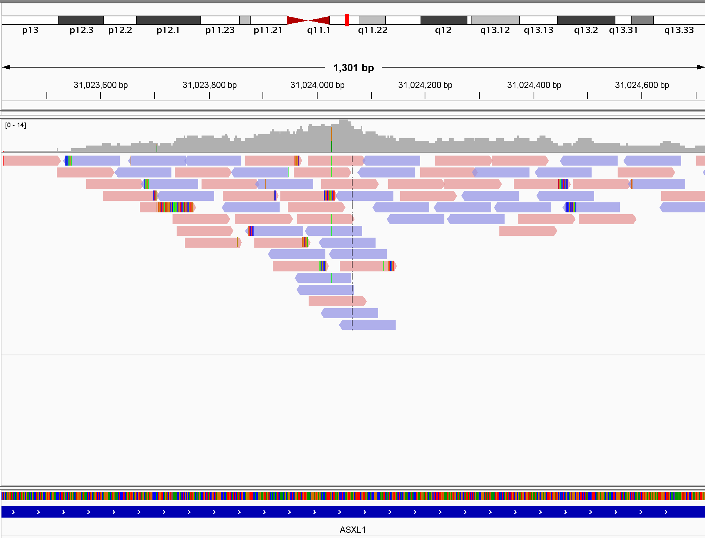

간단한 Alignment Viewer를 만들어보자.
IGV (Thorvaldsdóttir, Robinson, and Mesirov 2012)는 Bioinformatic의 NGS 분야에서 사용되는 시각화도구다. Genome Level에서 BAM/CRAM, VCF, SEG 등의 파일을 시각화 할수 있고, 주로 BAM같은 정렬된 시퀀싱 데이터를 직관적으로 나타낸다.
처음에 JAVA로 작성된 Desktop Application인 IGV를 선보였고, 웹을 위한 IGV.js (github)도 있으며, 이를 활용해 report를 생성해주는 igv-reports (github)도 출시하였다. 그 외에도 다양하므로 IGV Team의 github repo를 참고해보자.
기획
간단히 IGV 처럼 시각화 하는 도구를 테스트로 만들어보고자 한다. 이번에 테스트 해보려는 도구는 Godot과 Rust이다.
Godot (Juan Linietsky 2007, github)은 오픈소스 게임엔진으로 사용이 간편하고 Cross-platform이다. 스크립팅에는 자체 언어인 GDScript와 C++를 지원한다. GDScript는 python와 유사한 패턴이며 다루기 어렵지 않다. 간편함 때문인지 가끔 Data Science 분야에서 시뮬레이션에 사용하는 글도 자주 보인다. 또, 게임엔진이지만 GUI 도구를 만드는게 매우 간편해보인다.
Rust (Bugden and Alahmar 2022, github)는 메모리 안정성이 뛰어나고 속도가 빠른 언어이다. 속도는 C 및 C++에 동등하다. 최근 개발자들이 좋아하는 언어이다. Bioinformatics 분야에서도 이를 활용하는 케이스가 자주 보인다.
목적
- Godot이 무거운 GUI application으로써 사용이 가능한지 확인한다.
무거운이 초점이다. - Godot-Rust로 만든 application이 실제로 활용 가능성이 있는지 확인한다.
기초 구상
기본적인 기능만 갖추면 되며 초기 기획은 다음과 같다.
- hg38을 대상으로 한다.
- BAM파일을 읽을 수 있다.
- 원하는 영역의 alignment를 IGV 형태처럼 보여줄 수 있다.
- Read를 클릭하면 Read 정보가 나타날 수 있다.
Godot의 GDScript는 조금 써보았으나, 느리고 BAM파일을 읽는 라이브러리는 없다. Rust를 사용하면 코드의 속도는 보완될 것이며 BAM파일을 처리할 수 있는 크레이트도 있으므로 데이터 처리는 문제가 없을 것이다.
사용할 라이브러리
- Godot Rust (Bromeon 2023)
Godot에서 Rust를 사용할 수 있도록 binding하는 Rust의 Godot Rust Crate를 사용한다. 대부분의 코드 작성은 이걸로 진행. - Noodles (zaeleus 2018)
Rust에서 Bioinformatics data들을 다루게 해주는 크레이트. 순수 Rust로 작성되어있다.
리소스 파일
BAM 파일은 1000genome FTP에서 제공하는 아무 subject의 chr20 low_coverage 를 사용한다. 추가로, deepsequencing 데이터를 찾아보는 중.
대략적인 예상
chr20:31,023,417-31,024,716

IGV에서 Alignment를 표현하는 방식은 순차적으로 쌓인 Read를 빈공간이 없게 차곡차곡 쌓는다.
로직 구상을 위해 python으로 코드를 작성하고 예상 출력물을 작성했다.

실제 IGV와 약간 다른점이 있을 수 있다. IGV에서 실제로 어떤 로직으로 read를 정렬하는지 모르기 때문이다. (IGV를 들여다보면 실제로 이해가 안되는 정렬이 있다.)
또한, MD 태그에서 Mismatch 및 Deletion을 얻어야 하고 CIGAR 에서 Inserstion 정보를 얻어서 Reference와 다른부분을 표시해야 한다.
UI
필요한 Object는 아래와 같다
- Coverage Track
- Alignment Track
- Alignment
Alignment
기능: Read의 특정 Base를 클릭하면 Read 및 Base 정보가 출력되야한다. 표시: Read는 forward/reverse에 따라 색을 표현하고, Mismatch Base 및 Insersion, Deletion을 표현해야한다.
Read Object에 대한 구성은 아래처럼 우선 진행한다.
- Alignment
- Sequence
- Shape
- Bases
- Mismatch bases
- Insersion
- Deletion
- Clipping
Bases는 하위의 child는 Read에 대해 상대적 위치를 가지므로 표시하는데는 문제가 없다. 리소스가 걱정되긴한다.
표현하는데 너무 많은 물체가 나오지 않을까 걱정된다. 여러 물체가 모였을 때 하나의 그림으로 표시하는 노드가 있으면 좋겠다.
Read 자체를 Rect들의 집합으로 구성해야할까?